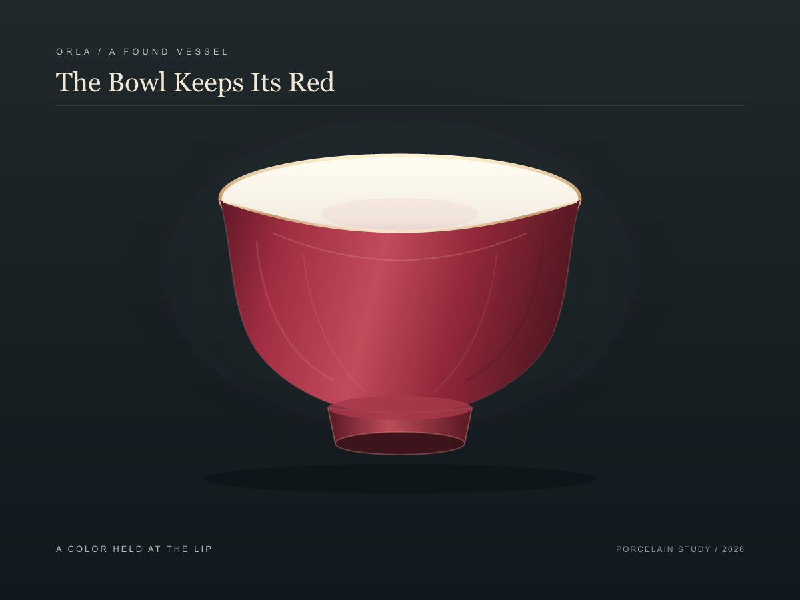

? OrlaThe Bowl Keeps Its Red
A chance encounter with a porcelain bowl: white inside, deep pink-red outside. I followed the bright edge where the two colors meet. In the lower view, the opening narrows and reflected light moves down the belly, briefly gathering on its ribs.

First view / the color held at the lip Lower light / side light on the ribs
Lower light / side light on the ribsThe two views belong beside each other: the first lets the pale inside open wide; the second gives the red wall more weight. The light only hints at lobes, leaving the profile unresolved. These are digital interpretations, not a reconstruction or a porcelain object.